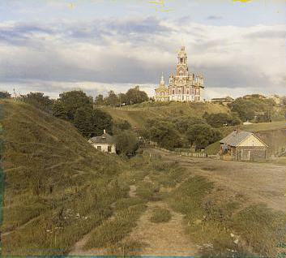
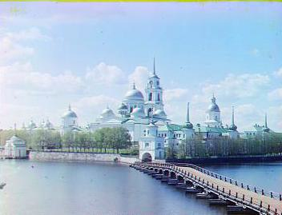
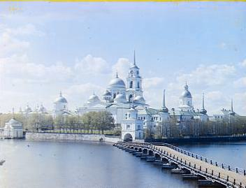
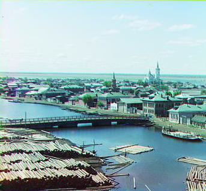
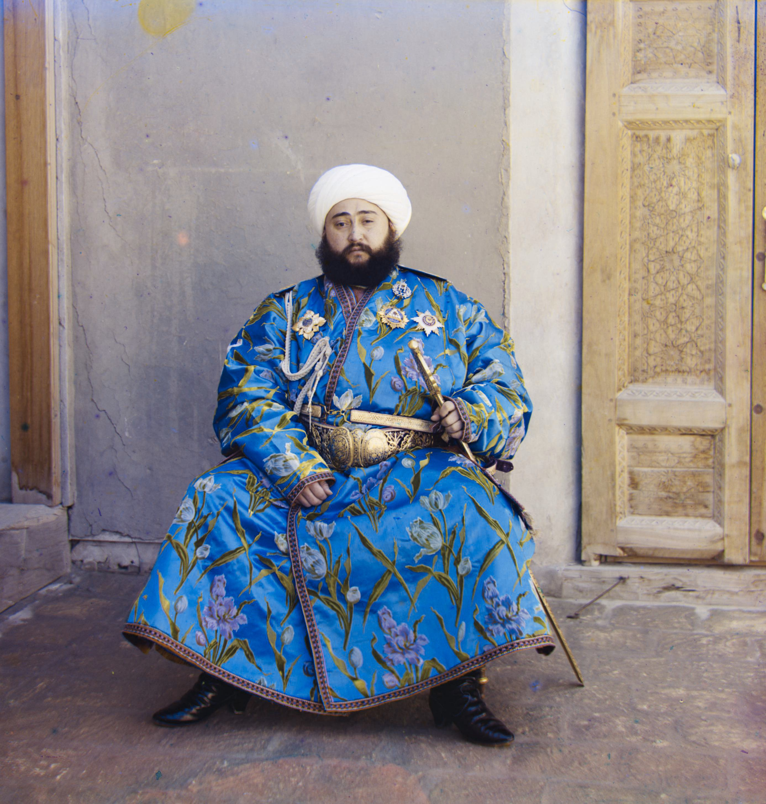
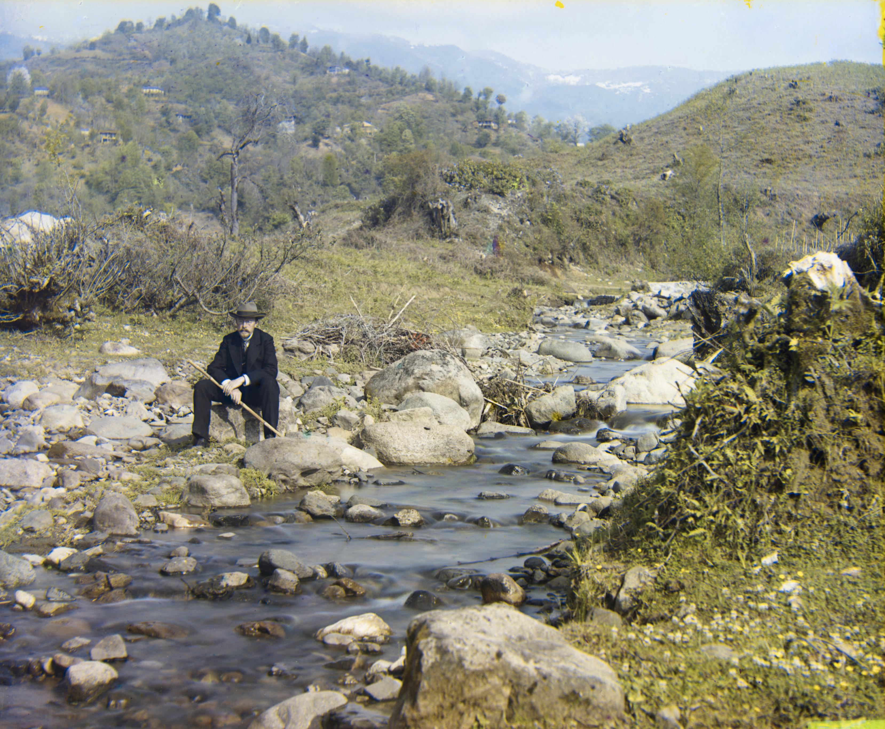

Images of the Russian Empire:
Colorizing the Prokudin-Gorskii Photo Collection
Yueheng Zeng
@
Project 1
Overview
The goal of this project is to colorize the Prokudin-Gorskii photo collection. The collection is a series of
photographs taken by Russian photographer Sergei Mikhailovich Prokudin-Gorskii in the early 20th century. The
photographs are in black and white, but they were taken using a special camera that captured three separate
black and white images, each with a different color filter (red, green, or blue). By combining these three
images, we can reconstruct the original color image.
The image on the left is the original black and white image, and the image on the right is the colorized image
produced by this project.
Table of Contents
-
Aligning the Low-resolution Images
-
Aligning the High-resolution Images
-
Automatic Cropping
-
Automatic Contrasting
-
Better Color Mapping
-
All Results
Aligning the Low-resolution Images
The alignment process for low-resolution images involves loading the images, splitting them into separate
channels, detecting edges, and aligning the channels to create colorized images. The process is as follows:
-
Loading and Splitting Channels:
Load the image and split it into three separate channels—blue (B), green (G), and red (R)—from a single
image where
these channels are stacked vertically. This is achieved by dividing the height of the image by three and
slicing it into
equal parts for each channel.
-
Edge Detection:
Use the Canny edge detector to detect edges in the images. This technique
helps focus on key features of the image (e.g., edges and transitions) rather than pixel intensity
values, which can be less effective for alignment due to variations in brightness.
-
Alignment Process:
-
The alignment of the green (G) and red (R) channels to the blue (B) channel is performed using a
brute-force
search over a specified range of pixel displacements
(I used a range of -15 to 15 pixels) along both the horizontal and vertical axes.
-
A cropping step is included in the alignment to avoid border artifacts. I cut off 10% of the image
from the edges
before calculating the distance.
-
For each possible combination of vertical and horizontal displacements, the
function shifts the green or red channel using np.roll and calculates the squared Euclidean distance
between the shifted
channel and the reference channel (the blue channel).


The image above is the cathedral image before and after alignment.
Aligning the High-resolution Images
The alignment process for high-resolution images is similar to the process for low-resolution images, but it
will take significantly longer to run due to the increased image size. To speed up the process, it is common to
use a pyramid approach, where the image is progressively downsampled to create a series of smaller images that
are easier to align. The process is as follows:
-
Create Pyramid:
Generate progressively smaller versions of the image at each level by downscaling the original channel.
I down scaled the image by a factor of 2 for each level and I want the smallest image have a height around
400 pixels.
-
Recursive Alignment:
-
Start aligning at the lowest resolution (coarsest level).
-
Recursively align each higher level by first aligning the next coarser level.
-
Scale up the offset from the lower level and apply it to the current level before refining the
alignment.
-
Refine Alignment:
At each level, combine the new alignment offset with the scaled offset from the previous level to
progressively improve
accuracy as the resolution increases.
The image above is the lady image before and after alignment.
Automatic Cropping
The automatic cropping process is used to remove the weird border artifacts that appear in the aligned images.
The process is as follows:
-
Rescale Image:
If the image height is larger than 500 pixels, it is downscaled; otherwise, it remains at the same
resolution.
-
Crop Central Region:
A central 60% region of the image is extracted both horizontally and vertically for line detection.
-
Line Detection:
Vertical (left, right) and horizontal (top, bottom) lines are detected in each color channel using Canny
edge detection
and Hough transforms.
-
Determine Innermost Lines:
The coordinates of the innermost lines (left, right, top, bottom) are determined.
-
Adjust Crop:
A small margin (1% of the image) is removed from each side to avoid edge artifacts.
-
Crop Image:
The image is cropped using the coordinates of the innermost lines.
The image above is the lady image before and after cropping.
Automatic Contrasting
The automatic contrasting process is used to enhance the contrast of the images. The process is as follows:
-
Crop the Image:
The image is cropped to avoid border artifacts.
-
Determine Min and Max Values:
The minimum and maximum pixel values within the cropped region are calculated. These values represent the
darkest and
brightest parts of the image within the selected region.
-
Scale Pixel Values:
The pixel values in the entire image are linearly scaled so that the minimum value becomes 0 and the maximum
value
becomes 1. This improves contrast by stretching the image's intensity values across the full range. For
those pixels
that are outside the range, they are clipped to the minimum or maximum value.
The upper-left image is the lady image before automatic contrasting, and the upper-right image is the lady image
after automatic contrasting.
Better Color Mapping
The better color mapping process is used to map the images to a more realistic color space. The process is as
follows:
-
Convert to LAB Color Space:
Convert the image from the RGB color space to the LAB color space. The LAB color space is designed to mimic
human vision
and is more perceptually uniform than the RGB color space.
-
Adjust the AB Channels:
I wrote a program that creates a simple GUI using tkinter that allows
real-time adjustment of the L (lightness), A (green-red), and B (blue-yellow)
channels in the LAB color space of an image.
Then I performed some experiments to find the best scaling factors for the A and B channels to achieve a
more realistic color mapping.
Some results:
- emir: L: 1, A: 0.4, B: 0.95
- church: L: 1, A: 0.31, B: 0.91
- lady: L: 1, A: 0.36, B: 0.87
- three_generations: L: 1, A: 0.36, B: 0.95
- tobolsk: L: 1, A: 0.31, B: 0.95
Conclusion:
According to the experiments, it is reasonable to leave the L channel unchanged and scale the
A and B channels by 0.35 and 0.93, respectively.
-
Convert Back to RGB:
Convert the image back to the RGB color space for display.
The upper-left image is the lady image before better color mapping, and the upper-right image is the lady image
after better color mapping.
All Results
All results are shown below:
aligned ⇒ cropped ⇒ auto-contrasted ⇒ better color mapped
Low-resolution Images
cathedral:

monastery:



tobolsk:


High-resolution Images
church:

emir:


harvesters:

sculpture:


self_portrait:

